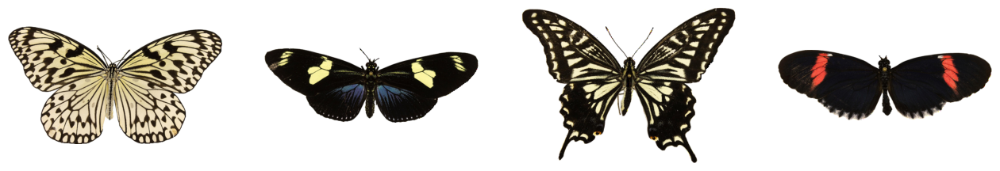
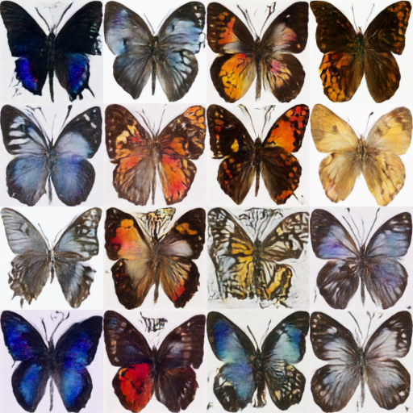
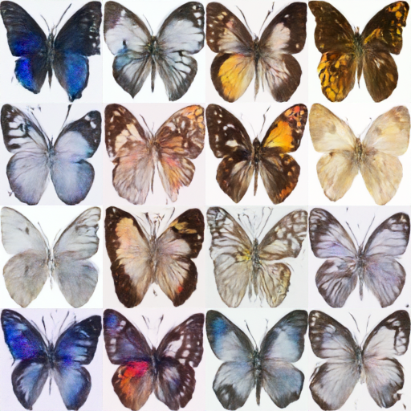
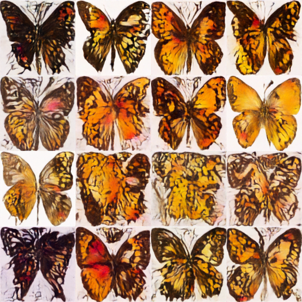

params = Parameters().from_json('../config.json')
_ = params.from_json('../tokens.json')Training a Diffuser
Learn how to train a diffuser
Setup basic parameters
Since the model checkpoints are quite large, install Git-LFS to version these large files:
!sudo apt -qq install git-lfs
!git config --global credential.helper storegit-lfs is already the newest version (2.9.2-1).
0 upgraded, 0 newly installed, 0 to remove and 20 not upgraded.Set training hyperparameters
params.config = Parameters(
image_size = 128, # the generated image resolution
train_batch_size = 16,
eval_batch_size = 16, # how many images to sample during evaluation
num_epochs = 50,
gradient_accumulation_steps = 1,
learning_rate = 1e-4,
lr_warmup_steps = 500,
save_image_epochs = 10, #10
save_model_epochs = 30, #30
mixed_precision = "fp16", # `no` for float32, `fp16` for automatic mixed precision
output_dir = f"{params.path.output}/ddpm-butterflies-128", # the model name locally and on the HF Hub
push_to_hub = False, # whether to upload the saved model to the HF Hub
hub_private_repo = False,
overwrite_output_dir = True, # overwrite the old model when re-running the notebook
seed = 0)Load the dataset
Load the Smithsonian Butterflies dataset with the 🤗 Datasets library:
params.config.dataset_name = "huggan/smithsonian_butterflies_subset"
dataset = load_dataset(params.config.dataset_name, split="train")Let’s explore the dataset and look at some images
print(f'The dataset has {len(dataset)} images')
fig, axs = plt.subplots(1, 4, figsize=(16, 4))
for i, image in enumerate(dataset[:4]["image"]):
_ = axs[i].imshow(image)
axs[i].set_axis_off()
fig.show()The dataset has 1000 images
We want to create a transform that would resize the image to the same size, do random flip and create a tensor
preprocess = transforms.Compose(
[
transforms.Resize((params.config.image_size, params.config.image_size)),
transforms.RandomHorizontalFlip(),
transforms.ToTensor(),
transforms.Normalize([0.5], [0.5]),
]
)
def transform(examples):
images = [preprocess(image.convert("RGB")) for image in examples["image"]]
return {"images": images}
dataset.set_transform(transform)Define dataloader
train_dataloader = torch.utils.data.DataLoader(dataset, batch_size=params.config.train_batch_size, shuffle=True)Create a UNet2DModel
model = UNet2DModel(
sample_size=params.config.image_size, # the target image resolution
in_channels=3, # the number of input channels, 3 for RGB images
out_channels=3, # the number of output channels
layers_per_block=2, # how many ResNet layers to use per UNet block
block_out_channels=(128, 128, 256, 256, 512, 512), # the number of output channels for each UNet block
down_block_types=(
"DownBlock2D", # a regular ResNet downsampling block
"DownBlock2D",
"DownBlock2D",
"DownBlock2D",
"AttnDownBlock2D", # a ResNet downsampling block with spatial self-attention
"DownBlock2D",
),
up_block_types=(
"UpBlock2D", # a regular ResNet upsampling block
"AttnUpBlock2D", # a ResNet upsampling block with spatial self-attention
"UpBlock2D",
"UpBlock2D",
"UpBlock2D",
"UpBlock2D",
),
)Checking the model sample output’s shape matches the input’s shape
sample_image = dataset[0]["images"].unsqueeze(0)
print("Input shape:", sample_image.shape)
print("Output shape:", model(sample_image, timestep=0).sample.shape)Input shape: torch.Size([1, 3, 128, 128])
Output shape: torch.Size([1, 3, 128, 128])Create a scheduler
noise_scheduler = DDPMScheduler(num_train_timesteps=1000)
noise = torch.randn(sample_image.shape)
timesteps = torch.LongTensor([50])
noisy_image = noise_scheduler.add_noise(sample_image, noise, timesteps)
Image.fromarray(((noisy_image.permute(0, 2, 3, 1) + 1.0) * 127.5).type(torch.uint8).numpy()[0])Define loss and prediction
noise_pred = model(noisy_image, timesteps).sample
loss = F.mse_loss(noise_pred, noise)Train the model
optimizer and a learning rate scheduler
optimizer = torch.optim.AdamW(model.parameters(), lr=params.config.learning_rate)
lr_scheduler = get_cosine_schedule_with_warmup(
optimizer=optimizer,
num_warmup_steps=params.config.lr_warmup_steps,
num_training_steps=(len(train_dataloader) * params.config.num_epochs),
)Evaluation functions
def make_grid(images, rows, cols):
w, h = images[0].size
grid = Image.new("RGB", size=(cols * w, rows * h))
for i, image in enumerate(images):
grid.paste(image, box=(i % cols * w, i // cols * h))
return grid
def evaluate(config, epoch, pipeline):
# Sample some images from random noise (this is the backward diffusion process).
# The default pipeline output type is `List[PIL.Image]`
images = pipeline(
batch_size=params.config.eval_batch_size,
generator=torch.manual_seed(config.seed),
).images
# Make a grid out of the images
image_grid = make_grid(images, rows=4, cols=4)
# Save the images
test_dir = os.path.join(config.output_dir, f"samples")
os.makedirs(test_dir, exist_ok=True)
image_grid.save(f"{test_dir}/{epoch:04d}_{config.seed}.png")Training Loop
def get_full_repo_name(model_id: str, organization: str = None, token: str = None):
if token is None:
token = HfFolder.get_token()
if organization is None:
username = whoami(token)["name"]
return f"{username}/{model_id}"
else:
return f"{organization}/{model_id}"
def train_loop(config, model, noise_scheduler, optimizer, train_dataloader, lr_scheduler):
# Initialize accelerator and tensorboard logging
accelerator = Accelerator(
mixed_precision=config.mixed_precision,
gradient_accumulation_steps=config.gradient_accumulation_steps,
log_with="tensorboard",
logging_dir=os.path.join(config.output_dir, "logs"),
)
if accelerator.is_main_process:
if config.push_to_hub:
repo_name = get_full_repo_name(Path(config.output_dir).name)
repo = Repository(config.output_dir, clone_from=repo_name)
elif config.output_dir is not None:
os.makedirs(config.output_dir, exist_ok=True)
accelerator.init_trackers("train_example")
# Prepare everything
# There is no specific order to remember, you just need to unpack the
# objects in the same order you gave them to the prepare method.
model, optimizer, train_dataloader, lr_scheduler = accelerator.prepare(
model, optimizer, train_dataloader, lr_scheduler
)
global_step = 0
# Now you train the model
for epoch in range(config.num_epochs):
progress_bar = tqdm(total=len(train_dataloader), disable=not accelerator.is_local_main_process)
progress_bar.set_description(f"Epoch {epoch}")
for step, batch in enumerate(train_dataloader):
clean_images = batch["images"]
# Sample noise to add to the images
noise = torch.randn(clean_images.shape).to(clean_images.device)
bs = clean_images.shape[0]
# Sample a random timestep for each image
timesteps = torch.randint(
0, noise_scheduler.config.num_train_timesteps, (bs,), device=clean_images.device
).long()
# Add noise to the clean images according to the noise magnitude at each timestep
# (this is the forward diffusion process)
noisy_images = noise_scheduler.add_noise(clean_images, noise, timesteps)
with accelerator.accumulate(model):
# Predict the noise residual
noise_pred = model(noisy_images, timesteps, return_dict=False)[0]
loss = F.mse_loss(noise_pred, noise)
accelerator.backward(loss)
accelerator.clip_grad_norm_(model.parameters(), 1.0)
optimizer.step()
lr_scheduler.step()
optimizer.zero_grad()
progress_bar.update(1)
logs = {"loss": loss.detach().item(), "lr": lr_scheduler.get_last_lr()[0], "step": global_step}
progress_bar.set_postfix(**logs)
accelerator.log(logs, step=global_step)
global_step += 1
# After each epoch you optionally sample some demo images with evaluate() and save the model
if accelerator.is_main_process:
pipeline = DDPMPipeline(unet=accelerator.unwrap_model(model), scheduler=noise_scheduler)
if (epoch + 1) % config.save_image_epochs == 0 or epoch == config.num_epochs - 1:
evaluate(config, epoch, pipeline)
if (epoch + 1) % config.save_model_epochs == 0 or epoch == config.num_epochs - 1:
if config.push_to_hub:
repo.push_to_hub(commit_message=f"Epoch {epoch}", blocking=True)
else:
pipeline.save_pretrained(config.output_dir)Let’s train
args = (params.config, model, noise_scheduler, optimizer, train_dataloader, lr_scheduler)
notebook_launcher(train_loop, args, num_processes=1)Launching training on one GPU.View the output
sample_images = sorted(glob.glob(f"{params.config.output_dir}/samples/*.png"))
Image.open(sample_images[-1])
sample_images = sorted(glob.glob(f"{params.config.output_dir}/samples/*.png"))
Image.open(sample_images[-2])
Image.open(sample_images[-3])